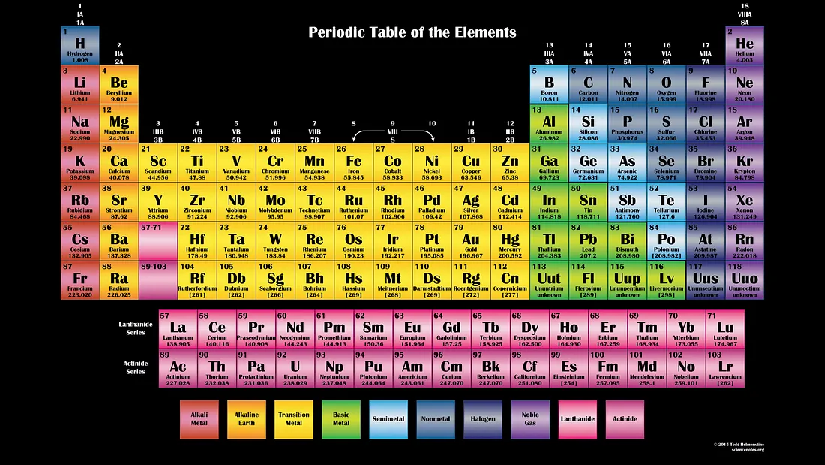
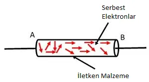
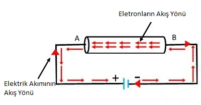
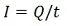
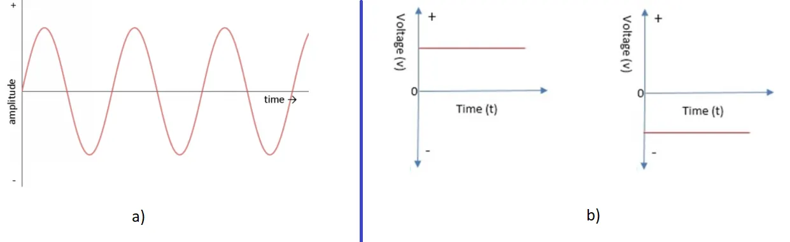

Elektrik, temelde elektrik gücünün veya yükün akışı şeklinde ifade edilebilir. Elektrik, hem doğanın temel bir parçasıdır hem de en çok kullanılan enerji türlerinden biridir. Kapak resminde görüldüğü gibi bir doğa olayı olan yıldırımlar, bulutlarda biriken yüksek miktardaki gerilimin ani olarak toprağa boşalması neticesinde oluşur. Yine kapak resminde görülen elektrik iletim hatları ise birincil enerji kaynakları kullanarak üretilen elektrik akımının dağıtımı için kullanılırlar. Bir önceki makalemizde incelediğimiz üzere kömür, doğalgaz, nükleer enerji, güneş enerjisi veya rüzgar enerjisi gibi birincil enerji kaynakları vasıtasıyla elektrik enerjisi ikincil kaynak olarak kullanıma sunuluyor. Bu makalemizde elektrik enerjisini oluşturan temel bileşenlerden bahsedeceğiz.
Giriş cümlemizde elektriği bir akış olarak ifade ettik. Peki bu akıştan kasıt nedir ? Bunu anlayabilmemiz için gelin birlikte maddelerin biraz derinliklerine inelim.
Bilindiği gibi maddeler atomlardan oluşur. Atomların da 3 temel bileşeni vardır: proton (+), nötron ve elektron (-). Bu bileşenlerden proton ve nötron atom çekirdeğinde bulunurken, elektronlar bu çekirdeğin etrafında sürekli hareket halindedirler. Bu temel bileşenlerin sayıları da maddelerin karakteristiklerini belirleyen bir faktördür. Alttaki görselde elementlerin periyodik tablodaki yerlerini bulabilirsiniz.

Örneğin, alüminyumun bir atomunda 10 elektron ve 13 proton bulunur. alüminyumun bir atomundaki bu (-3) yük (serbest elektron) fazlalık sayesinde alüminyum, metal kategorisine giriyor. Bunun aksine karbonu ele aldığımızda, bir karbon atomunda 2 elektron ve 6 proton mevcuttur ve bu sebeple de doğada (+4) yüklü olarak bulunur.
İletken maddeler, bir atomdan diğerine rastgele hareket eden çok sayıda serbest elektron içerirler. Bu hareket eden elektronlar sayesinde de bir elektrik akımı meydana gelir. Yandaki görselde verilen malzemenin A-B uçları arasında meydana gelebilecek herhangi bir gerilim farkı sonucunda bu rastgele hareket eden elektronlar, belirli bir yönde birlikte hareket etmeye başlarlar.

Metal tel boyunca (A-B arası) bir elektrik potansiyeli farkı uygulandığında, telin atomlarına gevşek bir şekilde bağlanan serbest elektronlar, yandaki görselde gösterilen “batarya” nın pozitif terminaline doğru hareket etmeye başlar. Bu sürekli elektron akışı elektrik akımını oluşturur. Teldeki elektronların akışı, bataryanın negatif terminalinden harici devre aracılığıyla pozitif terminale doğrudur.

Elektron teorisine göre, iletken malzeme boyunca bir potansiyel fark uygulandığında, bazı maddeler devreden akar. Bu akış sayesinde de elektrik akımı oluşur. Ayrıca bu maddenin daha yüksek potansiyelden daha düşük potansiyele, yani pozitif terminalden harici devre yoluyla hücrenin negatif terminaline aktığı varsayılır. İletkenin herhangi bir bölümündeki akımın akış büyüklüğü, elektronların akış hızını belirler bu da saniyede akan yük olarak alttaki gibi formülize edilebilir:

Elektrik yükünün akışına göre akım esas olarak iki türe ayrılır, yani alternatif akım ve doğru akım. Doğru akımda, yükler tek yönlü olarak akarken, alternatif akımda yükler her iki yönde de zamanla değişerek akar.

Üstteki görselde soldaki (a) grafikte alternatif akımın zamanla sahip olduğu gerilim miktarını gösterirken, sağdaki (b) grafikte doğru akımda gerilim miktarının sabit olduğu gösterilmiştir. Gerilimin eksi değer alması demek, akımın yönünün tersine döndüğünü ifade eder.
Doğru akım doğada kendiliğinden oluşabilir. Örneğin, yukarıda örnek verdiğimiz yıldırım olayında, bulutlarla yer arasında oluşan gerilim farkı sonucu doğru akım meydana gelir. Bununla birlikte örneğin hidroelektrik santrallerinde jeneratörler vasıtasıyla üretilen elektrik, evlerdeki prizlere alternatif akım olarak taşınır.
Bu haftalık makalemizi daha fazla uzatmamak adına, akım türlerinin üretim, dağıtım ve kullanım yerleri gibi detaylarını ileriki makalelerimizde inceleyelim. Haftaya görüşmek üzere.